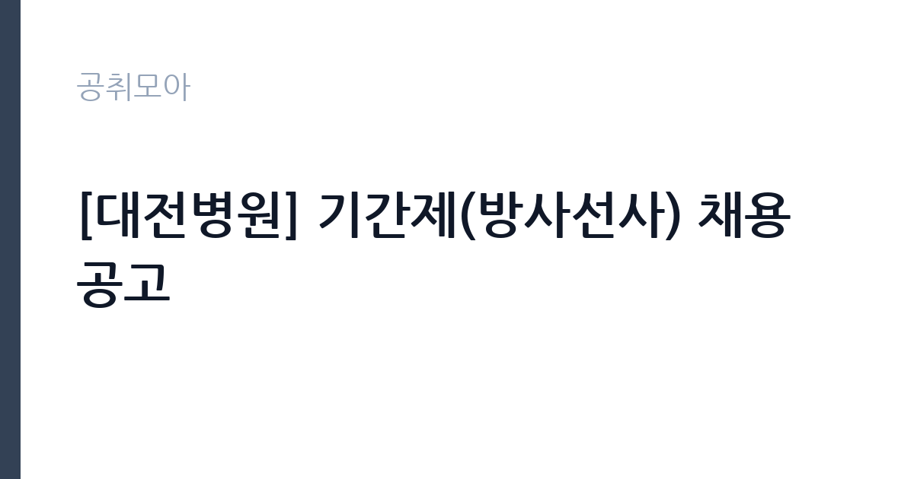

[공공기관] [대전병원] 기간제(방사선사) 채용 공고
근로복지공단 · 대전 · 마감 2026-11-11 (D-7) · 출처 잡알리오

한눈에 보는 모집 조건
| 기관 | 근로복지공단 |
|---|---|
| 공고명 | [대전병원] 기간제(방사선사) 채용 공고 |
| 고용형태 | 기간제 |
| 근무지 | 대전 |
| 게시일 | 2026-11-04 |
| 마감일 | 2026-11-11 (D-7) |
지원자격, 이렇게 읽으세요
- 채용직군별 자격요건
- 방사선사 : 방사선사 면허증 소지자
- 모든 전형 응시자격은 응시원서 마감일 기준
기간제 근로자는 근로계약 기간이 정해진 신분입니다. 계약 기간과 갱신 가능 여부가 근로계약서에 명시되며 기간 만료 시 근로관계가 종료됩니다. 결원 보충이나 특정 사업 기간에 맞춰 채용되는 경우가 많아 업무 범위가 명확합니다. 이번 공고는 근로복지공단이 직접 진행하는 자체 전형입니다. 방사선사는 방사선사 면허가 필수이며, 면허 취득 예정자로 지원할 수 있는지는 공고문의 별도 조항으로 정해집니다. 이 공고처럼 공인영어성적 최저 기준을 함께 두는 경우가 있으므로 두 요건을 동시에 확인해야 합니다. 치과 영상 장비 운용 경험이나 병원 근무 경력은 우대 사항으로 붙는 경우가 많습니다. 채용 후에는 결격사유 조회와 채용 신체검사, 방사선 관계 종사자 건강진단 절차가 이어집니다. 응시 자격 판단이 애매하면 접수 전에 채용 담당 부서로 문의하는 편이 안전합니다. 공고문의 응시자격 표를 보면 자격 항목이 여러 줄로 나뉘어 있으므로, 각 줄을 하나씩 체크하며 본인 해당 여부를 표시해 두면 누락을 줄일 수 있습니다. 학력이나 전공 요건이 없는 공고라도 제출서류 목록은 그대로 적용되므로 서류 준비 부담은 줄지 않습니다. 이 공고 원문에 적힌 응시 조건 문구는 '방사선사 : 방사선사 면허증 소지자' / '모든 전형 응시자격은 응시원서 마감일 기준'입니다. 문구를 그대로 읽고 본인 해당 여부를 하나씩 표시해 두면 서류 단계에서 탈락하는 일을 줄일 수 있습니다.
이 공고의 포인트
이 건은 근로복지공단이 같은 시기에 낸 5개 모집분야 가운데 방사선사(영상의학) 직무입니다. 다른 직무 공고와 요건이 다르므로 지원 전에 모집분야 표를 대조해야 합니다. 이 공고의 첫 번째 포인트는 고용 형태입니다. 계약 기간이 정해져 있어 근무 종료 시점이 명확합니다. 그만큼 짧은 기간에 어떤 실적을 남길지가 중요해집니다. 두 번째는 업무 범위가 명확하다는 점입니다. 방사선사(영상의학) 직무로 채용되므로 배치 이후 담당 업무가 크게 흔들리지 않습니다. 세 번째는 근무지입니다. 대전 지역 근무로 수도권 공고에 비해 지원자 분포가 넓지 않아 상대적으로 경쟁이 분산되는 경우가 있습니다. 지역 기반 채용이라 거주지와 통근 가능성이 실질적인 판단 기준이 됩니다. 선발 인원은 공고문에 명시되어 있으니 모집분야 항목을 함께 확인하십시오.
전형은 어떻게 진행되나
전형은 서류심사와 면접심사를 기본으로 하고 직무에 따라 필기나 실기, 체력검정이 추가됩니다. 서류 단계에서는 응시자격 충족 여부와 제출서류 형식을 확인하며 이 단계에서 탈락하는 지원자가 적지 않습니다. 면접은 직무 이해도와 경험을 확인하는 방식으로 진행되고 발표는 개별 통보나 홈페이지 게시로 이뤄집니다. 최종합격 이후에는 결격사유 조회와 채용 신체검사가 이어지며 이 절차에서 문제가 확인되면 합격이 취소될 수 있습니다. 구체적인 전형 단계와 배점은 공고문에 표로 정리되어 있으니 원문을 기준으로 준비하십시오. 결과 발표는 문자와 이메일로 동시에 이뤄지지 않는 경우가 있어 두 경로를 모두 확인하십시오.
원문에서 확인한 전형 방식
ㅇ 채용직군별 자격요건 - 방사선사 : 방사선사 면허증 소지자 * 모든 전형 응시자격은 응시원서 마감일 기준 ㅇ 병역사항: 「병역법」 제76조에서 정한 병역의무 불이행 사실이 없는자 ※ 현재 군복무 중인 경우 임용예정일 이전 전역이 가능한 자 ㅇ 기타: 임용예정일 즉시 근무가 가능한 자 ※ 임용예정일은 공단 사정에 따라 변경될 수 있음 ㅇ 연령제한 없음
이런 분께 추천해요
- 방사선사 면허를 보유한 분
- 공인영어성적 기준을 함께 충족하는 분
- 치과·병원 영상 촬영 경험이 있는 분
지원 전 체크리스트
- 응시자격 요건과 경력 기준을 충족하는가 — 경력은 증명서로 입증해야 합니다
- 계약 기간과 근무 시작일·종료일을 확인했는가
- 제출서류 목록을 모두 준비했는가 — 누락 시 서류 단계에서 탈락합니다
- 접수 마감 2026-11-11 이전에 접수 방식을 확인해 제출했는가
모집 일정과 제출 타이밍
2026-11-04에 공고가 올라왔고 접수는 2026-11-11까지입니다. 남은 기간은 7일이며, 이 기간에 자격증 사본과 경력증명서, 주민등록등본 같은 기본 서류를 모두 준비해야 합니다. 경력증명서는 발급에 며칠이 걸리는 경우가 있으니 가장 먼저 신청하십시오. 접수는 온라인과 우편·방문으로 나뉘는 경우가 많고, 우편 접수는 도착 기준으로 판정되므로 마감일 소인만 믿으면 안 됩니다. 면접 일정은 서류 발표 후 개별 통보되므로 제출 후에도 연락을 받을 수 있도록 유지해야 합니다. 마감 이후에는 어떤 사유로도 접수가 인정되지 않으므로 하루 전 제출을 목표로 하십시오.
직무 이해하기: 공공기관
근로복지공단은 산재보험과 고용보험 사업, 근로복지 사업을 수행하는 준정부기관으로 본사는 울산에 있습니다. 전국에 지역본부와 지사, 산재병원과 직업재활시설을 운영합니다. 순천병원은 전남 순천에서 산재 근로자의 진료와 재활을 맡는 의료기관으로, 의료직·간호직·행정직이 함께 근무하고 산업보건 분야 전문인력을 별도로 채용합니다. 방사선사 업무는 진단 영상을 촬영하고 판독이 가능한 상태로 만드는 일입니다. 촬영 전 환자에게 검사 절차와 주의사항을 설명하고, 촬영 부위에 맞춰 자세를 잡아 준 뒤 촬영 조건을 설정합니다. 치과병원이라면 파노라마·CT·구내 촬영이 중심이 되고, 촬영한 영상은 판독 시스템에 올려 진료과에 전달합니다. 장비의 정도 관리와 필름·센서 등 소모품 관리, 피폭선량 기록도 함께 맡습니다. 임신 가능성이 있는 환자나 소아 환자의 촬영에서는 방어복 착용과 피폭 최소화 조치를 먼저 확인해야 합니다. 이 직무는 담당 구역이 정해져 있어 근무지에 따라 실제 업무 환경이 달라집니다. 업무 강도와 근무 시간대는 부서 배치에 따라 달라지므로 면접에서 확인하는 것이 가장 정확합니다. 이 건의 근무 대상 지역·부서는 원문 기준 '방사선사'입니다 원문에 '방사선사 : 방사선사 면허증 소지자'라는 조건이 명시되어 있습니다.
자기소개서 작성 팁
지원서는 면허와 촬영 실적을 앞세우는 것이 효과적입니다. 담당했던 촬영 종류와 일평균 촬영 건수, 재촬영률을 낮춘 경험을 수치로 제시하십시오. 환자 응대에서 갈등을 줄인 사례, 장비 점검 루틴을 문서화한 경험도 좋은 소재입니다. 공인영어성적은 서류 단계에서 확인되므로 점수와 취득일을 정확히 기재하고, 진료 지원이 목적이라는 점을 분명히 밝히십시오. 구성은 지원 동기, 직무 경험, 기여 방안 순서가 무난합니다. 지원 동기는 근로복지공단의 사업 중 본인이 관심을 가진 부분을 한 가지로 좁혀 서술하고 추상적인 표현은 줄이십시오. 직무 경험은 담당했던 업무와 규모, 결과를 수치로 제시하면 설득력이 올라갑니다. 기여 방안은 입사 후 첫 3개월과 1년 계획으로 나눠 쓰면 준비도가 드러납니다.
면접 준비 포인트
면접에서는 촬영 자세 유도와 환자 응대 방식을 확인합니다. 촬영이 어려운 환자(구역 반사가 심한 환자, 소아, 거동이 불편한 환자)를 어떻게 설득하고 재촬영을 줄일지 묻는 질문이 나옵니다. 장비 이상을 발견했을 때의 조치 순서, 피폭 관리 수칙을 어디까지 알고 있는지도 평가 대상입니다. 판독 결과가 늦어져 진료 일정이 밀릴 때 어떻게 조율했는지 구체적으로 답하십시오. 지원 기관의 최근 사업이나 조직 개편 내용을 확인해 두면 지원 동기 질문에서 차이가 납니다. 면접은 공고문에 적힌 직무 내용을 얼마나 이해하고 있는지 확인하는 질문으로 시작하는 경우가 많으니, 모집분야 문구를 그대로 읽어 두는 것이 도움이 됩니다.
급여·근무조건 읽는 법
알리오(공공기관 경영정보 공개시스템) 2025년 결산 경영공시 기준으로 근로복지공단 일반정규직 1인당 평균보수액은 6,828만원, 공시된 신입사원 초임은 3,664만원입니다. 평균보수액은 기본급에 고정수당·실적수당·성과상여금·급여성 복리후생비를 모두 합산한 값이라 월 기본급만 보고 판단하면 실제와 크게 어긋납니다. 이번 공고는 기간제 채용이라 위 정규직 평균보수는 그대로 적용되지 않습니다. 기간제 보수는 기관의 기간제 임금 기준을 따르며 계약 기간이 함께 정해집니다. 방사선사 보수는 병원 임금 규정에 따라 기본급과 각종 수당으로 구성되며, 야간·당직·특수근무 수당이 붙는 경우가 있습니다. 면허 수당과 근속 수당 항목이 별도로 운영되는 곳도 있어 처우표를 항목별로 확인해야 합니다. 2026년 적용 최저임금은 시급 10,320원, 월 환산 2,156,880원(주 40시간·209시간 기준)입니다. 고용노동부 고시 제2025-47호로 확정된 금액입니다. 공고문에 금액이 제시되지 않은 항목은 원문 보수표나 처우 설명에서 확인해야 하며 확인되지 않은 수치는 쓰지 않는 것이 원칙입니다. 비교할 때는 월 급여뿐 아니라 상여·명절휴가비·복지포인트·초과근무수당까지 포함한 연간 총액으로 계산하십시오. 기간제라면 계약 기간 동안의 총액을, 무기계약이라면 호봉 상승과 정년까지의 누적 소득을 기준으로 판단하는 편이 정확합니다.
자주 묻는 질문
- 선발 인원은 몇 명인가요?
공고문의 모집분야 항목에 직종별 인원이 표로 제시되어 있습니다. 첨부된 공고문 원문에서 확인하십시오. - 근무지는 어디인가요?
대전 지역의 근로복지공단 소속 근무지입니다. 세부 주소와 출퇴근 조건은 원문 공고문에서 확인할 수 있습니다. - 보수는 얼마인가요?
채용 신분(기간제)과 기관 임금 규정에 따라 정해지며 구체적인 금액은 공고문 처우 항목에 제시됩니다. 금액이 공개되지 않은 경우에는 원문의 보수표를 확인하십시오.
함께 보면 좋은 공고
[공공기관] 한국농어촌공사 영산강사업단 공무직(청소원) 보훈 장애 제한경쟁 채용공고 — 마감 2026-11-20[공공기관] 2027년 1차 박사후연수연구원, 석사후연수연구원 및 위촉연구원 공개채용 — 마감 2026-11-20[공공기관] 서울대학교치과병원 2027년 상반기 정규직(원무직) 채용 공고 — 마감 2026-11-18출처: 잡알리오 공개정보를 바탕으로 공취모아가 정리한 안내글입니다. 모집 조건·일정은 변경될 수 있으니 지원 전 반드시 원문 공고문을 확인하세요. 본 글은 정보 제공용이며 합격을 보장하지 않습니다.